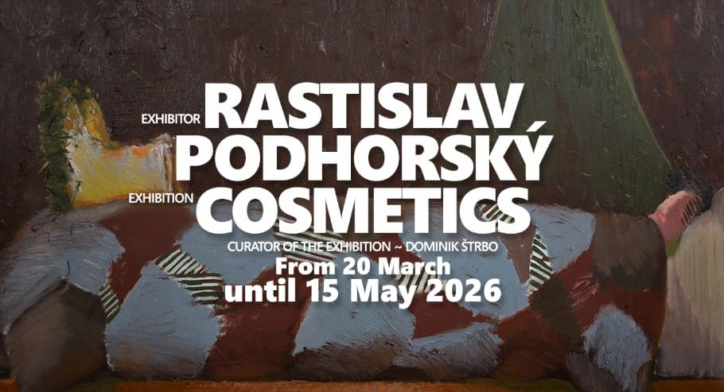
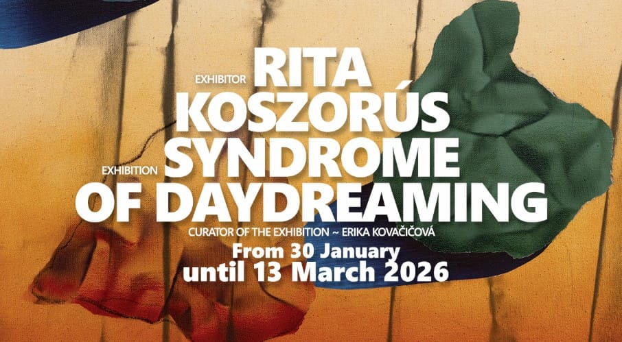
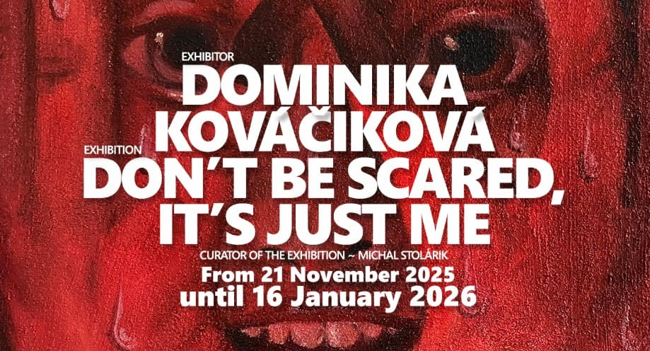
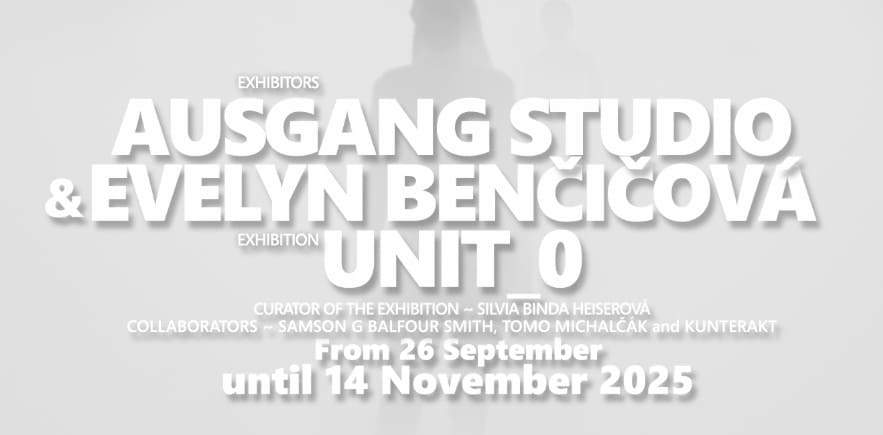

Zameranie:moderná tvorba, novší umelci, možnosť zakúpenia diel
Mapa
Výstavy/ predošlé výstavy

Rastislav Podhorský - Cosmetics
Výstava Cosmetics predstavuje výber diel Rastislava Podhorského, ktoré tematizujú jeho pretrvávajúci záujem o ľudskú figúru a procesy stávania sa, akcentované na pomedzí zdanlivej reality a lyrického paradoxu. Autorovi vlastná téma metafyziky sa tu odhaľuje v podobe komentáru k starostlivosti človeka o seba, ku kozmetike.

Rita Koszorús - Syndrome of Daydreaming
Tvorba vizuálnych svetov zdanlivej abstrakcie Rity Koszorús pracuje s myšlienkami o hľadaní istoty a domova – miesta, či naopak pocitu bezpečia v priateľstve a láske; o spolupatričnosti a osobnej, či kolektívnej nostalgii.

Dominika Kováčiková - Don’t Be Scared, It’s Just Me
Maliarsky svet Dominiky Kováčikovej prináša znepokojivé situácie, ktoré sa pohybujú v hraničných prostrediach medzi osobným a verejným, medzi zraniteľnosťou a sebavedomím. Všadeprítomnú polaritu premieňa na podmanivé drámy, ktoré pútajú pozornosť svojou vizualitou a ďalej otvárajú dvere do neľahkých tém.

AUSGANG studio & Evelyn Benčičová - Unit_0
Hoci sa strach vyvinul ako evolučný mechanizmus nevyhnutný pre ľudské prežitie, v dnešných postpravdivých a hypermediálnych spoločnostiach je strach inštrumentalizovaný ako politický nástroj, ktorý nás vedie do stavu paralýzy, odmietania a nedôvery